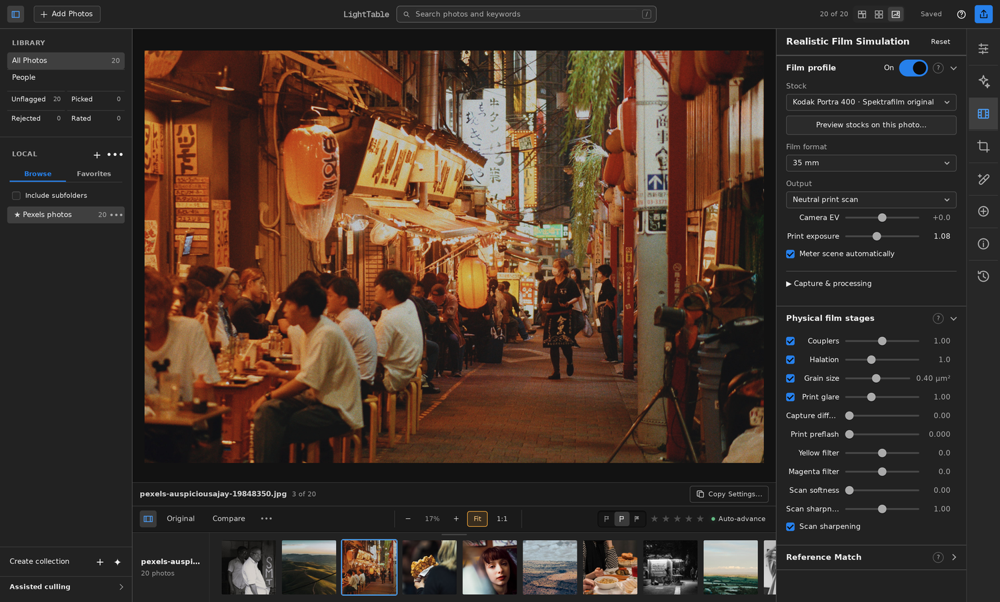

Flathub
Not published yet
The planned Flatpak route for Linux desktops. There is no LightTable Flathub listing to install yet.
Open LightTable on Flathub- Install
- Update
- Uninstall
Choose how to install LightTable on your Linux desktop. This first Linux release is experimental.
LightTable 0.6.2 for Linux. Choose a package below.
See the Linux app →
Browsers cannot reliably identify your distribution. Choose it here for the right instructions.
If unsure, run uname -m in a terminal. ARM64 appears only when an experimental ARM64 release is available.
Choose your distribution and processor above to see commands for an available release.
See published releases for available Linux builds.
Open LightTable from your application menu after installation.
Install the x86_64 package with pacman. It installs the desktop libraries, application menu entry, and commands. Keep your desktop’s portal backend and GPU driver installed.
Save both files in the same folder, open a terminal there, and run:
If switching from the portable archive, run its uninstall.sh first so its per-user launcher does not shadow the package. Open LightTable from your application menu after installation.
Close LightTable before updating. Download the new package and matching checksum, verify it, and install with pacman -U again. Pacman manages this installation; the portable in-app updater stays disabled.
Removing the package preserves your photos, catalog, settings, and caches.
The archive includes LightTable, Python, and the film engines. The desktop libraries come from your distribution.
Choose your distribution above for its package command. The archive needs compatible GTK 3 and WebKitGTK 4.1 desktop libraries.
Keep the portal backend supplied by your desktop. Omarchy uses the Hyprland portal, with a file-picker backend. Install your distribution’s Vulkan driver for your GPU.
Save the archive and its checksum in the same folder. Open a terminal there and run:
Keep this application folder in place. The installer creates a desktop launcher and commands in ~/.local/bin. Open LightTable from your app menu.
To upgrade, close LightTable, extract the new archive into a new permanent folder, and run its install.sh. The installer retargets its existing launchers and keeps your data.
To remove the desktop launcher and command links, close LightTable and run the active version’s uninstaller:
You can then delete that extracted application folder. Photos, catalogs, settings, caches, and sidecars remain. An older bundle cannot uninstall a newer bundle’s launchers.
Each channel will show its installation and update instructions after its listing is published.
Not published yet
The planned Flatpak route for Linux desktops. There is no LightTable Flathub listing to install yet.
Open LightTable on FlathubNot published yet
The AUR package is being prepared. Until it is published, use an available direct archive.
Open LightTable in the AURPlanned for later
Snap packaging and store publication will follow the initial Linux release. No Snap install is available yet.
Open LightTable in the Snap StoreDirect and Arch installations keep your catalog and presets in ~/.local/share/lighttable, settings in ~/.config/lighttable, and caches in ~/.cache/lighttable. Removing the application preserves your photos and editing data.
When changing installation channels, quit LightTable and remove the old channel’s launcher first. Keep your catalog and photos. Follow that channel’s migration instructions before opening an existing catalog in a sandboxed installation.